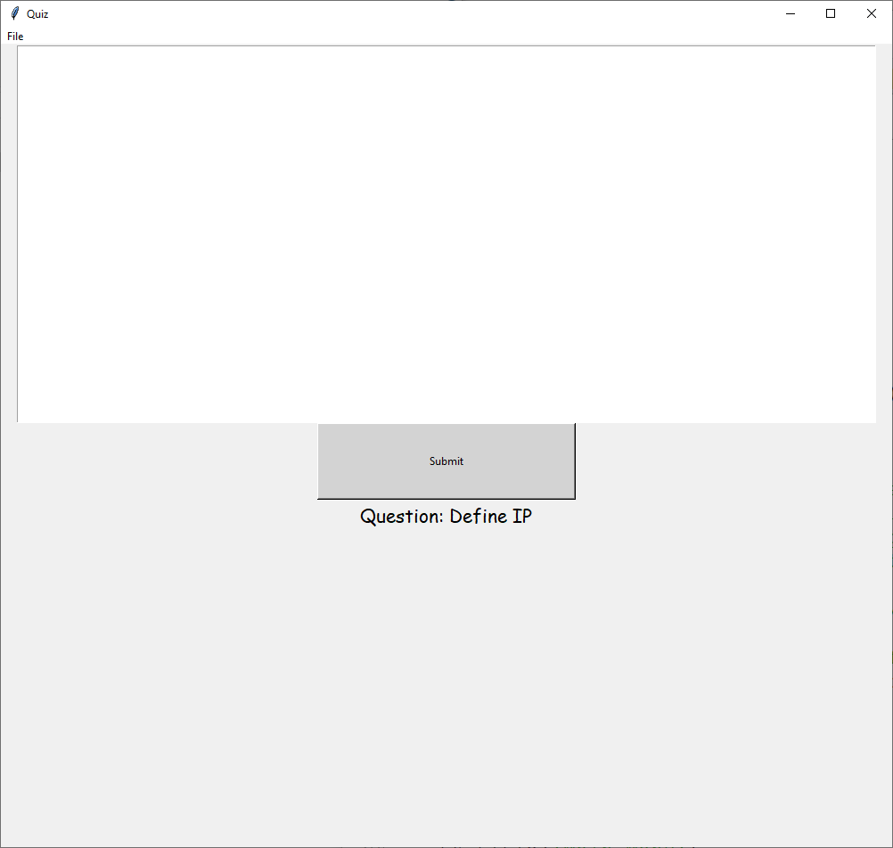
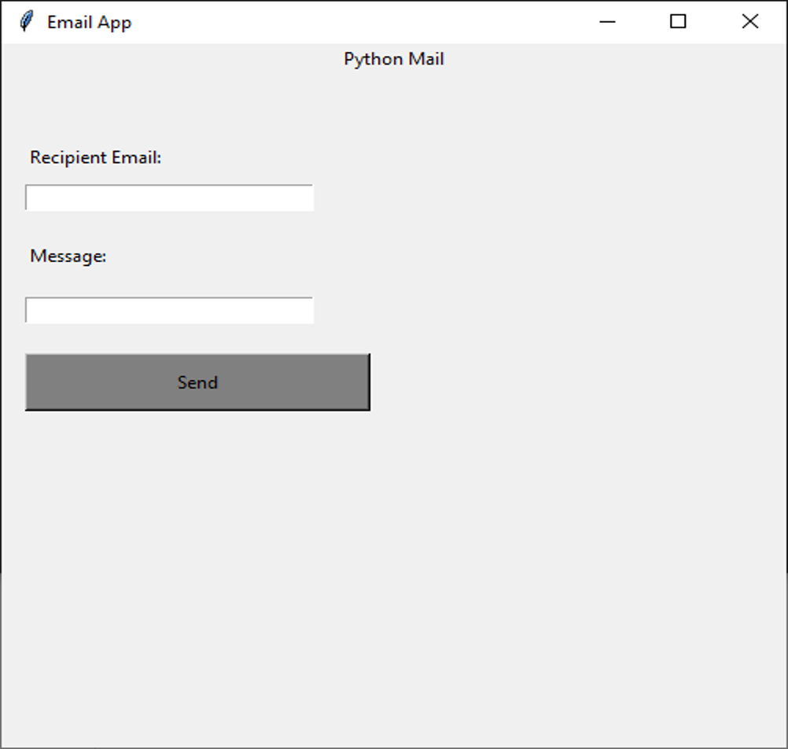
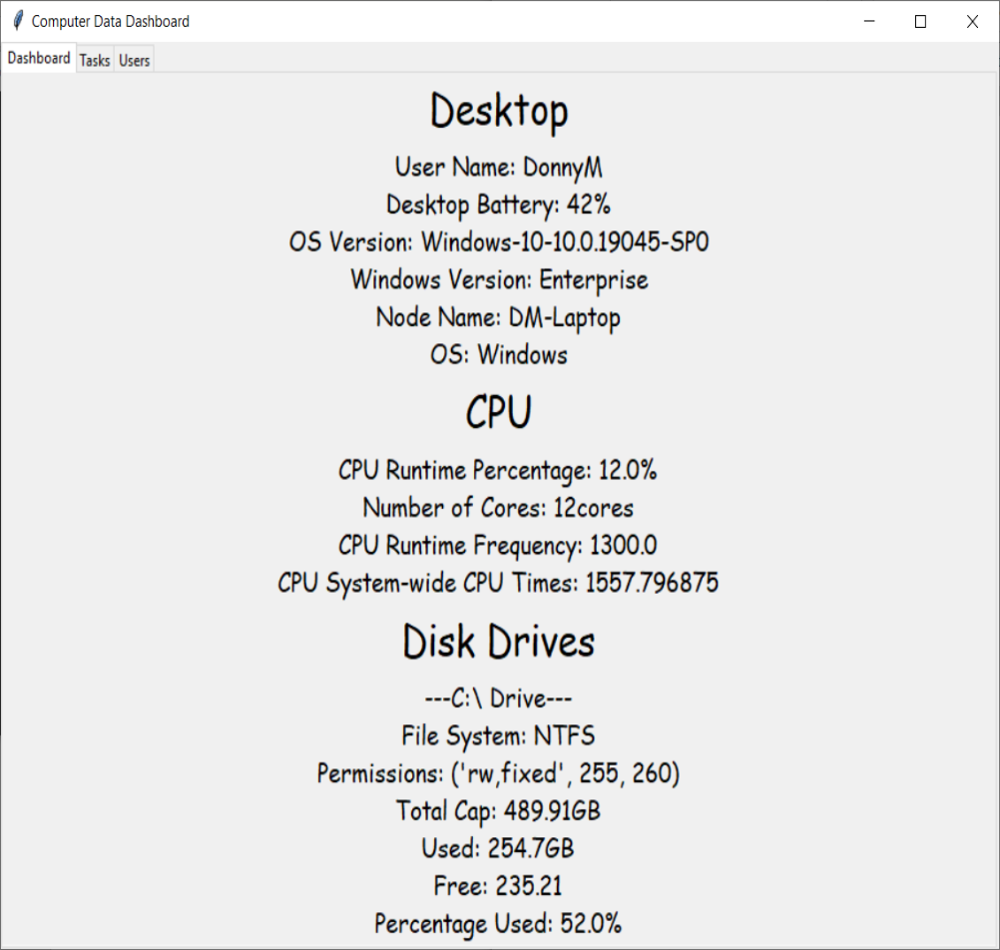

|  |
DSS T-Level QuizThis is a dedicated quiz for the following:From there, you're prompted with a text box to input your answer into. If you answer correctly, you move on. Type "exit" or "finish" in the text box to finish your game. Type "skip" or submit nothing in the text box to skip this question. At the end, you are provided with: correct/incorrect answers, skipped questions, overall percentage score Download Quiz |
Email ClientA dedicated email application that allows you currently ONLY to send emails.The current following are allowed: gmail, outlook, yahoo If youre using 2 factor authentification, you are prompted with an error and a link in the black box text window. From that link, create an app password and input it into the the "password" entry box of the login page. You may want to have a copy of the app password for later use. Download Email Client |
 |
|  |
Computer DashboardWant a central place to gather all your computer data?Including the following: |